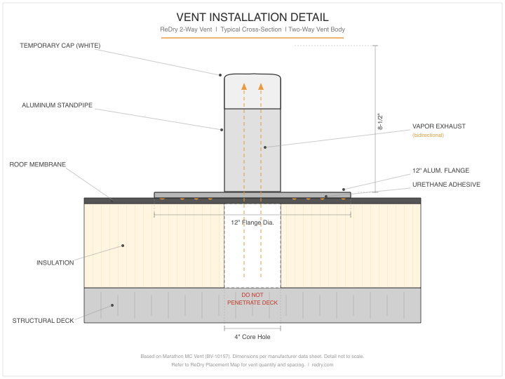
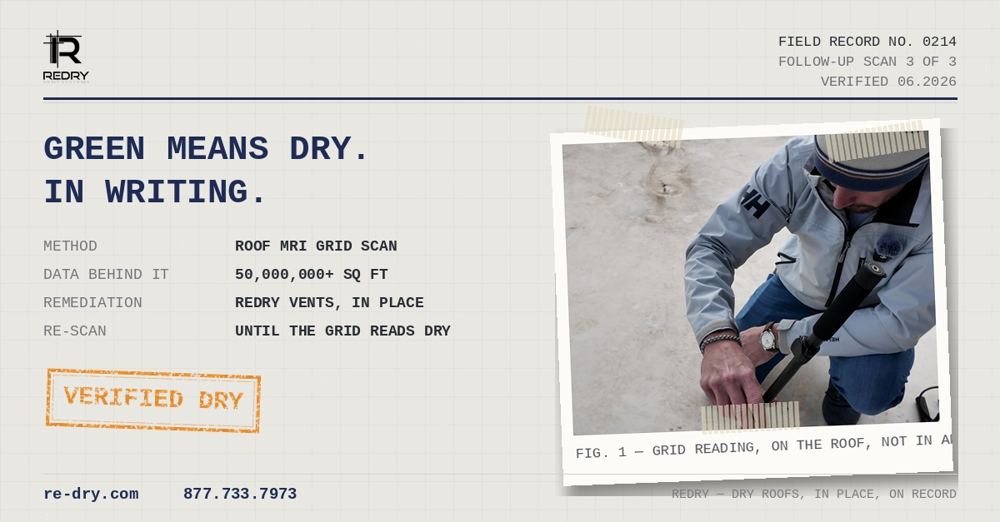

Building owner
Dry for a fraction of replace.
Drying runs about $4 / sq ft vs. ~$12 / sq ft to tear off and replace wet insulation — and you only pay to fix what actually scanned wet. The building stays online.
ReDry is a solar-powered, two-way vent that pulls moisture out of wet roof insulation in place — no rip-and-replace. Roof MRI maps every wet section, a vent goes over each one, and its south-facing solar fan draws the water out. Then we re-scan to prove it's dry — the documentation a manufacturer needs before it will warranty a coating.
Each ReDry unit is a pre-assembled two-way (bidirectional) vent — a check-valve cap that lets vapor out on solar-heating cycles and blocks moisture from coming back in — topped by a solar panel and fan (a 10-watt or 20-watt panel), or a line-powered Powered Vent where solar isn't ideal. The solar panel faces south and is engineered to make power even in overcast or rain, so the fan keeps drawing air through the roof assembly all day.
It seats on a 4-inch pipe bonded to the deck, is locked down with tamper-resistant screws, and is built in Tennessee. When the insulation reads dry, the fan-and-panel head simply uncouples and a cap goes on the pipe — converting it to a passive vent. No holes, no damage, nothing to repair.

The standard solar unit for typical roofs with good sun exposure — quiet, wireless, and self-powered.
More panel for larger moisture zones and low-light or northern climates — keeps drawing air on overcast days.
Line-powered for maximum, weather-independent airflow where solar isn't ideal or the timeline is tight.
ReDry is the drying half of a measured process — it only runs where Roof MRI found moisture, and the same scan verifies the result.
Roof MRI maps every wet section and grades it on the 0–10 PHD moisture scale — measured water, not a thermal guess.
A two-way vent is set over each wet zone per a measured placement map — one vent dries 500–1,000 sq ft.
The south-facing solar fan moves ~375 CFM through the assembly, pulling moisture up and out — day after day.
Re-scan on the same scale. Successive scans show the drop objectively — and the final scan is the warranty proof.
Vents ship pre-assembled with a cut sheet and a placement map. The contractor's crew installs; ReDry places and later collects the solar units.
Snap a chalk grid from the reference walls on the Placement Map and mark each vent center ≤ 4 in. wide. Stage a capped vent at every mark and confirm the count before cutting.
Cut a 4 in. core through membrane and insulation with a pilot-less hole cutter. Stop the instant resistance changes — never penetrate the deck. Clear all debris. Never install over standing water.
Lay the urethane pattern — 3/8 in. beads, 3 in. wave spacing, a 1/2 in. inboard perimeter bead. Center the vent and press until there's continuous 360° squeeze-out.
Set a 2-gal pail on top for at least 10 minutes, then flash in per the membrane manufacturer's spec.
Lift-test every vent (no movement), confirm count and adhesive pattern, and submit pre / during / post photos within 24 hours — the warranty condition.
Major manufacturers now permit recovering over wet insulation when ReDry vents are in place — the drying continues after the coating goes on. Wet insulation no longer has to delay the contract.
A warranty requires documented proof the roof was dry at install. A ReDry + Roof MRI post-scan establishes that baseline on the 0–10 PHD scale — instead of a 15-year warranty issued over trapped water.
On a verified-dry deck, a silicone / fluid-applied restoration (e.g., GACO) can be warrantied with confidence — a real warranty, not the appearance of one.
Drying runs about $4 / sq ft vs. ~$12 / sq ft to tear off and replace wet insulation — and you only pay to fix what actually scanned wet. The building stays online.
Recover over wet insulation instead of walking away, add a drying line item, and close on defensible data. Roof MRI users report close rates up 10–20%.
Documented proof of a dry deck before the warranty is written — and more coating jobs that clear instead of dying on wet insulation.
Every dot is a roof. Orange = ReDry installed or bid. Green = a Roof MRI moisture report. City and state only — the question isn't whether it works, it's whether you're in yet.

Every ReDry job ends the way it started: with a measured Roof MRI reading. We don't just declare a roof dry — we scan it and document it on the 0–10 PHD scale, so the owner, the contractor, and the manufacturer all read the same number.
That post-dry scan is the record that makes the coating warranty real — and the reason a wet roof no longer has to mean a tear-off.
ReDry keeps and maintains the hardware — you pay to dry the roof, and we collect the units when the job is verified dry. Two ways to engage:
Pre-assembled vents ship to you with the cut sheet and placement map. Your crew installs; we place the solar heads and collect them when the roof reads dry. Each vent dries 500–1,000 sq ft. (Six-month terms available.)
We build the vent map from your scan, place and monitor the units, track drying with Roof MRI re-scans, and collect everything once it's verified dry — with warranty-ready documentation.
Roof MRI maps the wet zones on the 0–10 scale.
A measured placement map sets vent count and spots.
Vents bonded per the spec; solar heads set by ReDry.
Re-scans track the moisture dropping over time.
Verified dry — heads come off, pipe is capped.
Book a call and we'll walk your project, the scan, the vent map, and the numbers — and how the lease works for your crew or your building.